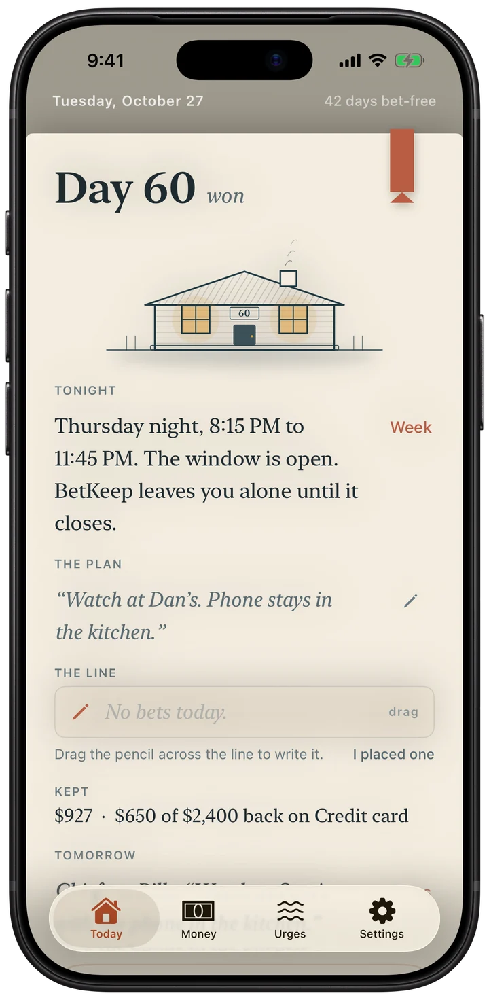
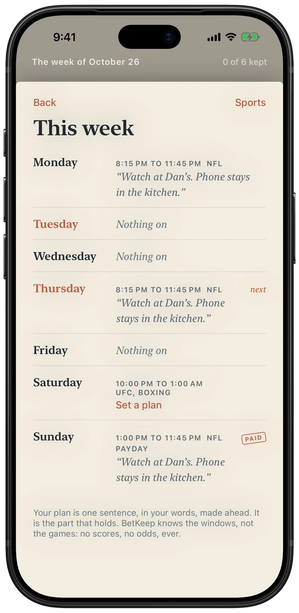
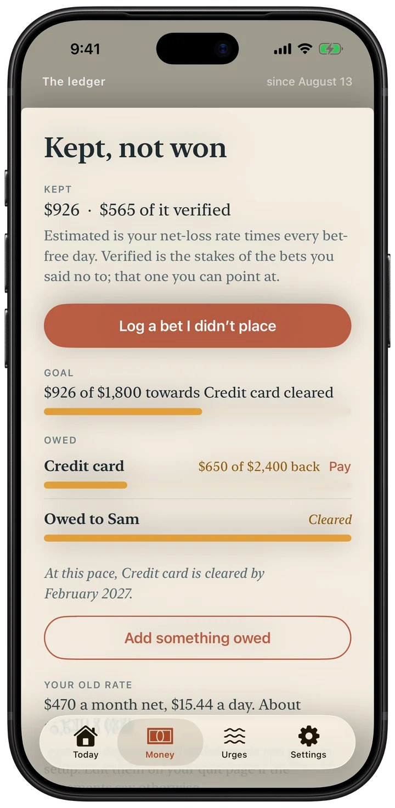
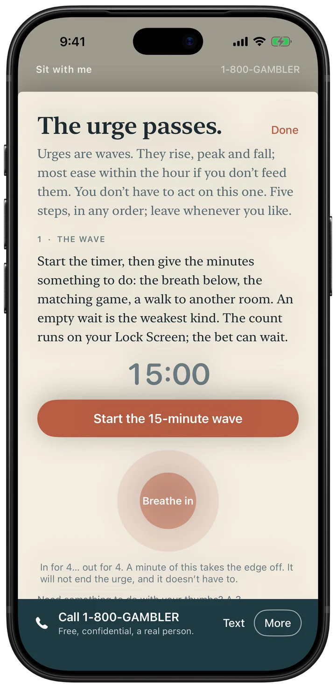

Tonight's page in an honest book. The house grows by days won and never resets.
Free. No account. No ads.

BetKeep is an iPhone app for quitting gambling: sports betting, prediction markets, online casino, poker, lottery, or trading. It is not a blocker. It sits beside the one you use.
It counts the days since your last bet and the money you kept, and it knows the nights the games are on. When the urge hits there are five steps to sit through it, with your region's helpline. Each night you write one line to close the day. Everything stays on your iPhone.

It knows the nights.
Your plan is ready before kickoff.

See the money you kept
Kept, paid back, and the day the debt clears.

When the urge hits
Sit with me, then log the bet you didn't place.
The details
Price
Free. Plus is optional: $9.99 once (US price). No subscription.
Checked against the App Store listing on November 10, 2026.
Support
Found a bug, or want something added? Email me at minieriapps+betkeep@gmail.com. I make BetKeep on my own and read every message. Give me a couple of days to reply.
If you're in crisis
988 Suicide & Crisis Lifeline: call or text 988 (US and Canada)
National Problem Gambling Helpline: 1-800-GAMBLER, or 1-800-MY-RESET (call, text or chat)
BetKeep is a personal companion, not a medical or crisis service.
Privacy Policy
Last updated: October 1, 2026
BetKeep does not collect, transmit, sell, or share any of your data. There is no account, no login, and no server.
What we collect
Nothing. The app has no analytics, no ads, no third-party SDKs, and makes no network requests. Because there is no backend, your data physically cannot reach us.
Where your data lives
Only on your iPhone, in Apple's on-device database. Delete the app and the data goes with it. Use the built-in backup, or the CSV/PDF export, to keep your own copy.
Notifications
If enabled, reminders are scheduled locally on your device and are not sent through any server.
Face ID and the app lock
BetKeep does not collect, access, store, or share face data. The optional app lock (in BetKeep's Settings, off by default) uses Apple's LocalAuthentication framework: iOS performs the Face ID, Touch ID, or passcode check itself and tells BetKeep only whether it succeeded. Your face data stays in your device's Secure Enclave under Apple's control; BetKeep never receives it, so there is nothing for us to use, retain, disclose, or share with any third party. To withdraw permission, turn the lock off in BetKeep's Settings, or switch off Face ID for BetKeep in the iOS Settings app (Face ID & Passcode › Other Apps). Because BetKeep holds no face data there is nothing for it to delete; your enrolled face is managed, and can be removed, only in iOS Settings › Face ID & Passcode.
Get Help and block setup links
The in-app helplines, self-exclusion registers, bank guides, and blocker apps are third-party services listed for convenience; calling or opening them connects you directly to them, not through BetKeep. Which of them you have set up is recorded only on your device.
In-app purchase
BetKeep Plus is an optional one-time purchase handled entirely by Apple's App Store. BetKeep never sees your payment details; Apple's own privacy policy applies to the transaction.
Children
BetKeep does not knowingly collect information from anyone, including children.
BetKeep is a personal companion. It is not a medical device, does not provide medical advice, diagnosis, or treatment, and is not a substitute for professional help. It does not offer wagering, odds, or links to gambling operators.